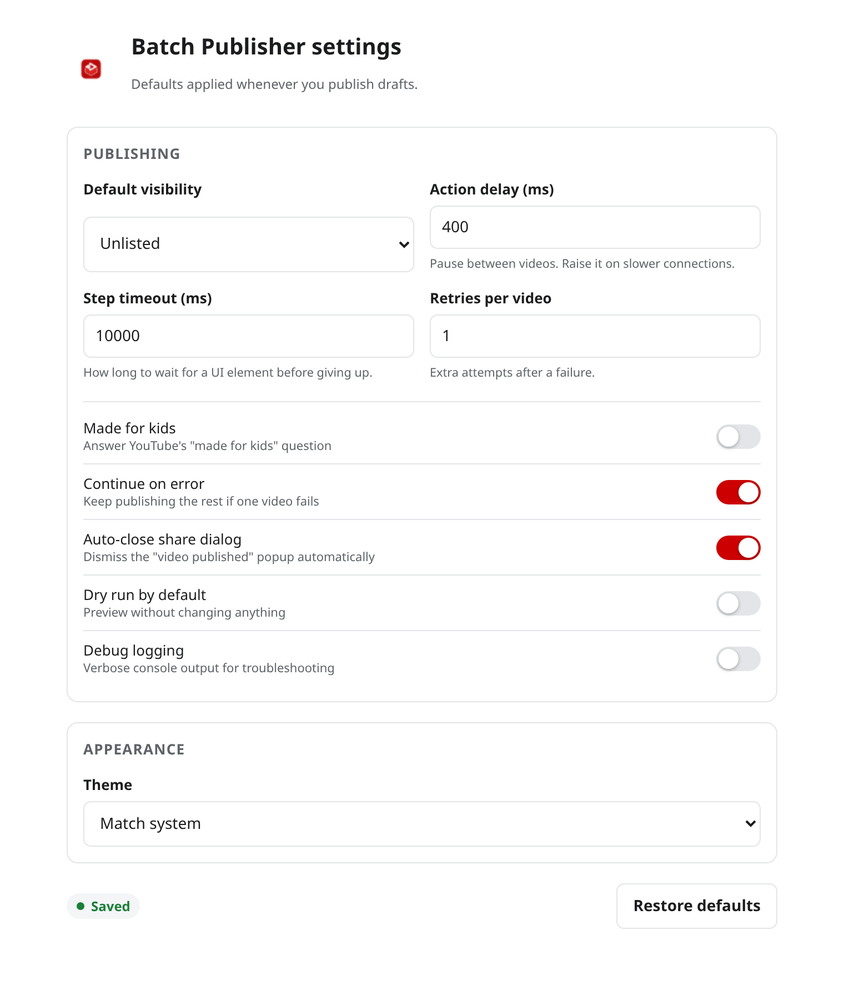

Settings
Open them from the ⚙️ gear in the popup, or from the extension's card in your browser's extensions page.
Everything is stored in chrome.storage.sync, so your preferences follow you to any
browser you sign into — and nothing is ever sent anywhere else.

The settings page.
Publishing
| Setting | Default | What it does |
|---|---|---|
| Default visibility | Unlisted | Which visibility the popup pre-selects. You can always override it per run. |
| Action delay | 400 ms | Pause between finishing one video and starting the next. Raise it on a slow connection; lower it to go faster. |
| Step timeout | 10 000 ms | How long to wait for a UI element to appear before treating the step as failed. Raise it on a very slow machine. |
| Retries per video | 1 | How many extra attempts a video gets after a failure. Set to 0 to fail fast. |
Behaviour
| Setting | Default | What it does |
|---|---|---|
| Made for kids | Off | The answer given to YouTube's "made for kids" question. Off means "No, it's not made for kids". |
| Continue on error | On | When on, a failed video is reported and the batch moves on. When off, the first failure stops the run. |
| Auto-close share dialog | On | Dismisses the "video published" popup after each save. Turn it off if you like reading them. |
| Dry run by default | Off | Makes the popup open in dry-run mode. Useful while you are getting comfortable with the tool. |
| Debug logging | Off | Verbose output in the browser console. Worth turning on before reporting a bug. |
Appearance
| Setting | Default | What it does |
|---|---|---|
| Theme | Match system | Light, dark, or follow your operating system's preference. |
The Restore defaults button at the bottom of the settings page resets every option in one go. Your drafts and published videos are untouched.
Suggested configurations
Cautious
Dry run on, continue on error on, retries 2, action delay 800 ms. Best for a first run on an unfamiliar channel.
Fast
Dry run off, retries 0, action delay 150 ms, step timeout 6 000 ms. For a fast machine and a batch you are confident about.
Slow connection
Action delay 1 200 ms, step timeout 20 000 ms, retries 2. Gives Studio plenty of room to catch up.